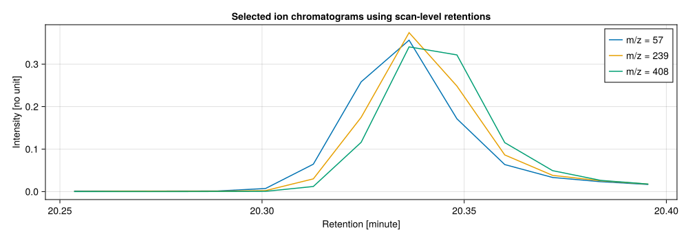

Scan timing
Background
In gas chromatography–mass spectrometry (GC–MS), a scan-level retention coordinate is not, in general, the coordinate at which every ion in that scan is acquired. Each scan spans a finite retention interval during which ions are sampled sequentially according to the instrument’s acquisition scheme. Consequently, the ion-specific retention coordinate depends on how the scan interval is referenced and how sampling is scheduled within it.
Instrument software and data formats typically associate a single retention value with each scan. However, that value may represent the start, midpoint, or end of the scan interval, depending on vendor conventions, acquisition mode, and export settings. Within a scan, ions are acquired in a defined order (e.g., ascending or descending m/z), and each ion is assigned a dwell time interval whose duration may be constant across ions or vary with instrument settings. As a result, different ions are sampled at systematically different retention coordinates within the same scan.
For many downstream analyses—such as accurate peak-shape reconstruction and deconvolution— treating all ions in a scan as if they were measured at the same retention coordinate introduces avoidable systematic error. This is particularly relevant when scan durations are non-negligible relative to chromatographic peak widths or when dwell times are heterogeneous.
To obtain an ion-specific retention coordinate, it is therefore necessary to combine:
- the reference point associated with the scan-level retention value,
- the total scan interval,
- the dwell allocation across ions and the acquisition order within the scan, and
- the desired reference point within each ion’s dwell time interval.
The JuChrom function mzretention formalizes this mapping. Given a scan-level retention coordinate and a description of the within-scan sampling scheme, it computes the effective retention coordinate at which a specific ion is sampled. This enables consistent, reproducible ion-level retention calculations across different acquisition configurations and data representations.
Example
# Load JuChrom, plotting backend, and the Agilent ChemStation MS loader
using JuChrom
using JuChrom.ChemStationMSLoader
# Load CairoMakie for plotting and Statistics for calculating the mean
using CairoMakie, Statistics
# Load an example Agilent ChemStation GC-MS run
file = joinpath(JuChrom.agilent, "C7-C40_ChemStationMS.D", "data.ms")
mss = load(ChemStationMS(file; mode=:ms))
# Trim scans to the RT interval (20.25–20.40 minutes) containing the n‑nonacosane peak
retentiontrim!(mss, start=20.25u"minute", stop=20.4u"minute")
# Integer-bin m/z values and convert to MassScanMatrix object
msm = mscanmatrix(binmzvalues(mss, validmzvalues=29:562))
# Plot the chromatograms of m/z 57, 239, and 408 using scan-level retentions
fig₁ = Figure(; size=(1000, 350))
ax₁ = Axis(fig₁[1,1], title="Selected ion chromatograms using scan-level retentions",
ylabel="Intensity [no unit]",
xlabel="Retention [minute]")
for mz in [57, 239, 408]
i = findfirst(==(mz), mzvalues(msm)) # m/z index in the binned list
ints = vec(rawintensities(msm)[:, i]) # intensity trace for that m/z
lines!(ax₁,
rawretentions(msm, unit=u"minute"),
ints / sum(ints), # normalize to comparable scale
label = "m/z = $(mz)")
end
axislegend(ax₁; position=:rt)
save("xic.svg", fig₁)CairoMakie.Screen{SVG}

From the three traces, the peaks at higher m/z appear shifted to slightly later retention times, consistent with a descending m/z acquisition order. While Agilent GC–MS instruments are known to acquire in descending order, plotting prominent ions with widely separated m/z values allows the acquisition order to be inferred empirically when it is not known a priori. We next use this information to correct for the intra-scan time shift and align the chromatographic traces.
# Plot the chromatograms of m/z 57, 239, and 408 using shifted retentions
fig₂ = Figure(; size=(1000, 350))
ax₂ = Axis(fig₂[1,1], title="Selected ion chromatograms using shifted retentions",
ylabel="Intensity [no unit]",
xlabel="Retention [minute]")
rawrts = rawretentions(msm, unit=u"minute")
rawscanduration = mean(diff(rawrts))
for mz in [57, 239, 408]
i = findfirst(==(mz), mzvalues(msm))
rts_corrected = mzretention.(rawrts;
mzindex=i,
mzcount=mzcount(msm),
dwell=:homogeneous,
order=:descending,
scan_interval=rawscanduration,
retention_ref=:start,
dwell_ref=:middle)
ints = vec(rawintensities(msm)[:, i])
lines!(ax₂,
rts_corrected,
ints / sum(ints),
label = "m/z = $(mz)")
end
axislegend(ax₂; position=:rt)
save("xic_shifted.svg", fig₂)CairoMakie.Screen{SVG}

Scan timing tools
JuChrom.mzretention — Function
mzretention(
retention::Union{Real, Unitful.Quantity};
mzindex::Union{Int, Nothing}=nothing,
mzvalue::Union{Real, Unitful.Quantity, Nothing}=nothing,
mzvalues::Union{AbstractVector{<:Union{Real, Unitful.Quantity}}, Nothing}=nothing,
retention_ref::Symbol=:start,
dwell_ref::Symbol=:middle,
dwell::Symbol=:homogeneous,
dwell_retention::Union{Real, Unitful.Quantity, Nothing}=nothing,
scan_interval::Union{Real, Unitful.Quantity, Nothing}=nothing,
dwell_retentions::Union{AbstractVector{<:Union{Real, Unitful.Quantity}}, Nothing}=nothing,
mzcount::Union{Int, Nothing}=nothing,
order::Symbol=:ascending,
validate_span::Bool=true
)Return the retention coordinate at which a specific m/z (or m/z index) is sampled within a scan.
A scan spans a finite retention interval of width scan_span. The reported scan-level retention typically refers to a particular reference point of that interval (start/middle/end). Within that interval, m/z values are sampled sequentially, each over a dwell interval. This function maps the scan-level retention to the retention coordinate associated with one specific m/z dwell interval, using:
- how
retentionis referenced within the scan interval (retention_ref), - the dwell allocation model (
dwell,dwell_retention/scan_intervalordwell_retentions), - the m/z acquisition order (
order), and - which point within the dwell interval to return (
dwell_ref).
retention and all dwell/interval inputs may be unitless (Real) or unitful (Unitful.Quantity), as long as they are mutually compatible for addition/subtraction.
Selecting the target m/z
Exactly one of the following identification modes must be used:
- By index: provide
mzindex. - By value: provide both
mzvalueandmzvalues. The index is found viafindfirst(==(mzvalue), mzvalues).
The resolved index is interpreted as an index into mzvalues / dwell_retentions as provided (see order).
Keywords
mzindex::Union{Int,Nothing}=nothing: 1-based index of the target m/z in the provided m/z list / dwell list. Ifnothing, it is resolved frommzvalueandmzvalues.mzvalue::Union{Real,Unitful.Quantity,Nothing}=nothingandmzvalues::Union{AbstractVector{<:Union{Real,Unitful.Quantity}},Nothing}=nothing: Use these together to locate the target by equality match. This is useful when you have an explicit m/z list and want the function to look up the index.mzcount::Union{Int,Nothing}=nothing: Total number of m/z values sampled in the scan (N). Required unless it can be inferred. Inference rules:- if
dwell == :heterogeneousanddwell_retentionsis given:mzcount = length(dwell_retentions) - else if
mzvaluesis given:mzcount = length(mzvalues)
If neither is available,
mzcountmust be provided explicitly.- if
validate_span::Bool=true: Whenscan_intervalis provided fordwell = :heterogeneous, check thatsum(dwell_retentions) ≈ scan_interval(relative tolerance1e-6). Set tofalseto skip this consistency check.
Scan-level reference: retention_ref
retention_ref specifies what the input retention means with respect to the scan interval.
:start:retentionis the start of the scan interval.:middle:retentionis the midpoint of the scan interval.:end:retentionis the end of the scan interval.
Let scan_span be the total scan interval width (derived from dwell information). The scan start coordinate used internally is then:
scan_start = retentionifretention_ref == :startscan_start = retention - scan_span/2ifretention_ref == :middlescan_start = retention - scan_spanifretention_ref == :end
Dwell allocation: dwell, dwell_retention, scan_interval, dwell_retentions
The scan span is defined as the sum of all dwell widths. Two allocation modes are supported:
dwell = :homogeneous
All m/z values have the same dwell width.
You must provide either:
dwell_retention: per-m/z dwell width, orscan_interval: total scan interval width. In this casedwell_retentionis derived asdwell_retention = scan_interval / mzcount.
If both dwell_retention and scan_interval are provided, the function checks consistency: dwell_retention * mzcount ≈ scan_interval within a relative tolerance of 1e-6.
dwell = :heterogeneous
Each m/z has its own dwell width.
dwell_retentionsmust be provided and must have lengthmzcount.- All elements of
dwell_retentionsmust be strictly positive. - If
scan_intervalis provided andvalidate_span == true, the function checkssum(dwell_retentions) ≈ scan_intervalwithin a relative tolerance of1e-6.
Acquisition order: order
order specifies the acquisition order within the scan interval:
:ascending: the dwell sequence is used as provided (m/z sampled in increasing order).:descending: the dwell sequence is reversed and the provided index is mapped asmzindex_acq = mzcount - mzindex + 1.
Important interaction:
mzindex(or the index resolved frommzvalue/mzvalues) is assumed to refer to the order in whichmzvalues/dwell_retentionsare provided. If the instrument acquired in descending order but your vectors are stored in ascending order (common), setorder = :descendingto obtain the correct within-scan position.
Dwell reference: dwell_ref
dwell_ref selects which point of the target dwell interval to return:
:start: return the start of the dwell interval.:middle: return the midpoint of the dwell interval.:end: return the end of the dwell interval.
If the target dwell width is δ and its start offset within the scan is D, then:
:start→ offsetD:middle→ offsetD + δ/2:end→ offsetD + δ
Return value
Returns: [ scan_start + \sum{j<k} \deltaj + \phi(\deltak) ] where k is the acquisition-order index, `δjare dwell widths in acquisition order, andφis the offset chosen bydwell_ref(0,δ/2, orδ`).
Examples
julia> # Homogeneous dwell times with mz target selected by index:
julia> r = mzretention(12.345u"minute"; # scan-level retention
mzindex=3, # return acquisition time of 3rd ion
mzcount=10, # 10 ions
dwell=:homogeneous, # homogeneously dwelled
order=:descending, # in descending m/z order
scan_interval=0.75u"ms", # across 0.75 seconds
retention_ref=:start, # scantime represents scan start
dwell_ref=:middle); # return acquisition time at dwell mid point
julia> r ≈ 12.345009375u"minute"
true
julia> # Heterogeneous dwell times with mz target selected by value:
julia> mzvals = [43, 57, 71, 73, 77]u"Th";
julia> dw = [0.002, 0.002, 0.003, 0.004, 0.002]u"s";
julia> r₇₃ = mzretention(
100.0u"s";
mzvalue=73u"Th",
mzvalues=mzvals,
dwell=:heterogeneous,
dwell_retentions=dw,
retention_ref=:start,
dwell_ref=:middle,
order=:descending);
julia> r₇₃ ≈ 100.004u"s"
true
julia> r₇₃ = mzretention.(
[100.0, 110.0]u"s";
mzvalue=73u"Th",
mzvalues=mzvals,
dwell=:heterogeneous,
dwell_retentions=dw,
retention_ref=:start,
dwell_ref=:middle,
order=:descending);
julia> r₇₃ ≈ [100.004, 110.004]u"s"
true